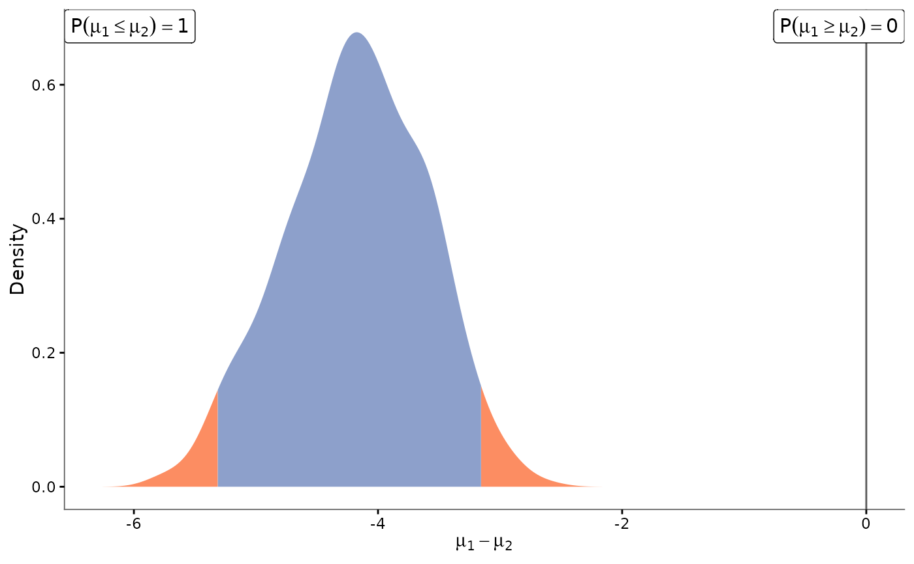

Plot the posterior distribution(s) of the difference of means
Source:R/plot_functions.R
plot_distrib.RdDisplay the posterior distribution of the difference of means between groups for a specific id. Behaviour depends on how many groups are involved:
a single group (
group2isNULLand only one group is present): the posterior distribution of the mean for that group;exactly two groups (
group1/group2given explicitly, or exactly two groups present insample_distrib): the posterior distribution of the difference of means, with reference at 0 on the x-axis and probabilities ofgroup1>group2(and conversely);more than two groups (and neither
group1norgroup2given): a constant-size summary – a heatmap of the empirical pairwise overlap between every group (seeplot_group_overlap_heatmap), plus a faceted detail grid limited to thetop_n_pairsmost differentiated pairs, plus (ifplot_mean = TRUE) the id-mean panel. To inspect every pairwise comparison individually instead of this automatic summary, useplot_distrib_each_pair.
Usage
plot_distrib(
sample_distrib,
group1 = NULL,
group2 = NULL,
id = NULL,
prob_CI = 0.95,
show_prob = TRUE,
mean_bar = TRUE,
index_group1 = NULL,
index_group2 = NULL,
plot_mean = TRUE,
top_n_pairs = 3
)Arguments
- sample_distrib
A data frame, typically coming from the
sample_posterior()function, containing the following columns:ID,GroupandSample. This argument should contain the empirical posterior distributions to be displayed.- group1
A character string, corresponding to the name of the group for which we plot the posterior distribution of the mean. If NULL (default) and
group2is also NULL, the groups are inferred fromsample_distrib(see Description).- group2
A character string, corresponding to the name of the group we want to compare to
group1. If NULL (default), see Description.- id
A character string, corresponding to the name of the id for which we plot the posterior distribution of the mean. If NULL (default), only the first appearing in
sample_distribis displayed.- prob_CI
A number, between 0 and 1, corresponding the level of the Credible Interval (CI), represented as side regions (in red) of the posterior distribution. The default value (0.95) display the 95% CI, meaning that the central region (in blue) contains 95% of the probability distribution of the mean.
- show_prob
A boolean, indicating whether we display the label of probability comparisons between two groups (ignored for single-group plots).
- mean_bar
A boolean, indicating whether we display the vertical bar corresponding to 0 on the x-axis (when comparing two groups), of the mean value of the distribution (when displaying a unique group).
- index_group1
A character string, used as the index of
group1in the legends. If NULL (default),group1is used. Only used for the single-group and two-group plots.- index_group2
A character string, used as the index of
group2in the legends. If NULL (default),group2is used. Only used for the two-group plot.- plot_mean
A boolean, indicating whether the panel showing the posterior mean of every id (coloured by group) should be added when more than two groups are involved.
- top_n_pairs
An integer, the number of most-differentiated group pairs to detail in the facet grid when more than two groups are involved (ignored otherwise). Defaults to 3.
Value
Either a single ggplot (one or two groups), or the result of
gridExtra::grid.arrange (more than two groups: the overlap
heatmap, the top-top_n_pairs facet grid, and optionally the
id-mean panel).
Examples
data <- simu_db(nb_id = 8, nb_group = 2, nb_sample = 5)
kern <- keRnel::variance_kernel(variance = 1) * keRnel::se_kernel(length_scale = 1)
posterior <- posterior_mean(data, kern)
samples <- sample_posterior(posterior, n = 500)
plot_distrib(samples, group1 = "1", group2 = "2", id = unique(samples$ID)[1])
